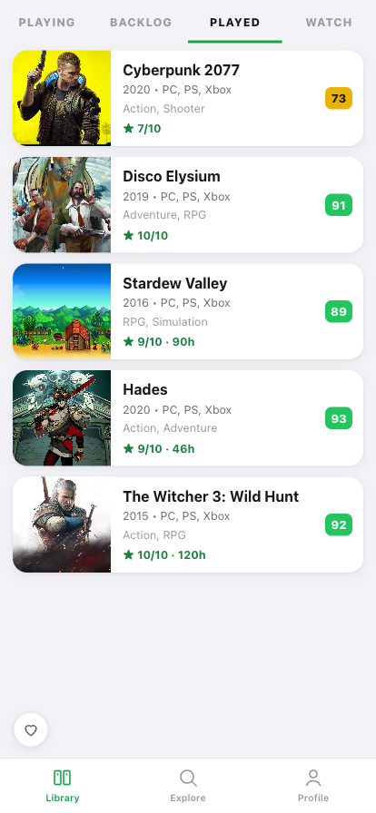
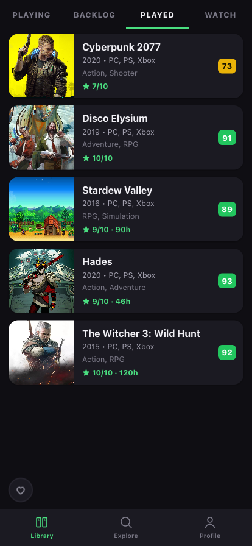
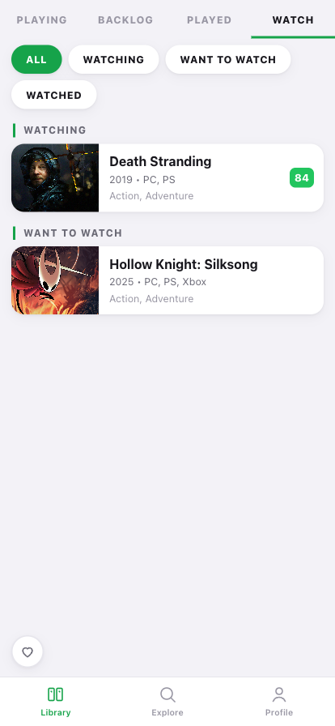
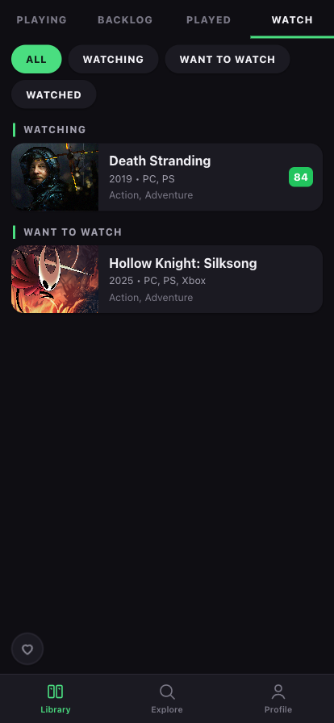
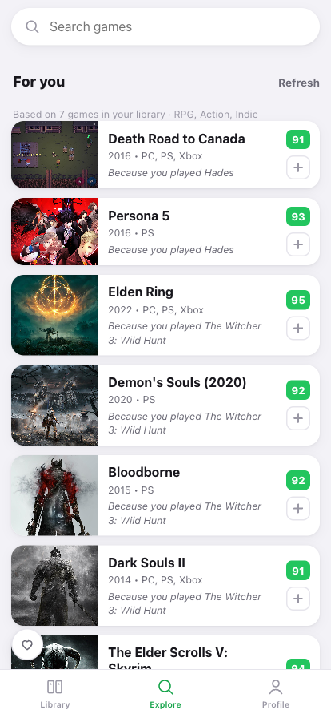
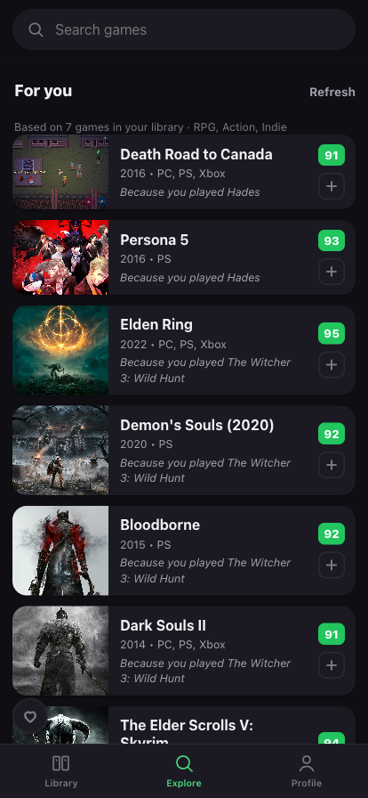
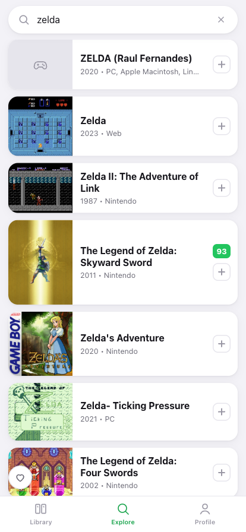
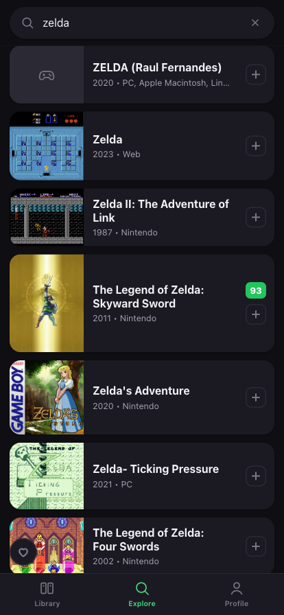

What it looks like








What it does
-
Two tracks, not one
Play — want to play → playing → played. Watch — want to watch → watching → watched. Plus “dropped”, because that's a real outcome.
-
A library with tabs
PLAYING / BACKLOG / PLAYED / WATCH, and the watch tab splits into watching, want to watch and watched so you can filter by each.
-
A page per game
Cover, year, platforms, genres, Metacritic — plus your own 1–10 score, hours, a note, and which platform you played or watched it on.
-
Watch instead
One tap to a YouTube longplay, game movie, walkthrough or review, or to Twitch. It opens a search — no embedded players and no third-party tracking.
-
Recommendations that explain themselves
“For you” is computed on your device from your own library, and every card says why it's there.
-
Your data is a file you own
Profile has stats by status, platform and genre, plus backup export and import. Themes are system, light or dark, pinned independently of the device.
Where the data lives
Your library is stored on the device and never uploaded. Game metadata comes from RAWG, with Steam as a fallback for PC titles.
Both go through a thin serverless proxy, for two boring reasons: a RAWG key can't be shipped in a browser, and Steam sends no CORS headers at all. The proxy passes metadata through — it never sees your library.
Installing it
iPhone
Open it in Safari, then Share → Add to Home Screen.
Android
Open it in Chrome and accept the Install prompt, or use the menu → Install app.
Desktop
It just runs in the browser — no install needed.
What it isn't
A free, fan-made project, not affiliated with RAWG, Valve, YouTube or Twitch. There's no social layer and no sync between devices — moving your library means exporting a backup and importing it on the other device.